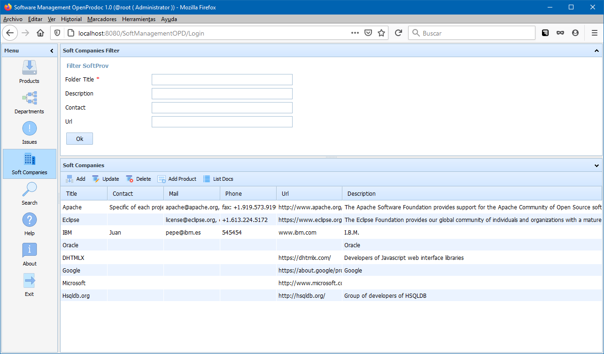

This section allows to manage the Software Companies that develop any kind of software your project is based on, used as libraries or need for running. The Software Companies didn't need to be at the same level in the organization of the company, they could be in their real "position", that is under different directions or area, depending on the kind of relationship with different departments, as development, production, R+D. SMO will display them independently of the position and allow to modify them. However, if the position is in different branches of the company structure, they will need to be created from OpenProdoc selecting the specific folder. From SMO, they will be created under the same folder. Additionally, it's possible to "hide" to some users any department from the SMO list using the OpenProdoc ACLs. This allow to "hide" Software Companies that develop some restricted software or that are under some negotiation. Those Software Companies only will visible for authorized users.
With the default configuration, the filter area of the Software Companies will show four filters:
With the default configuration, the list area display the columns:
Selecting a company, and always if the security permissions asigned allow it, it is possible to use the options:

In SMO Tree there is a complete view of operations and forms.